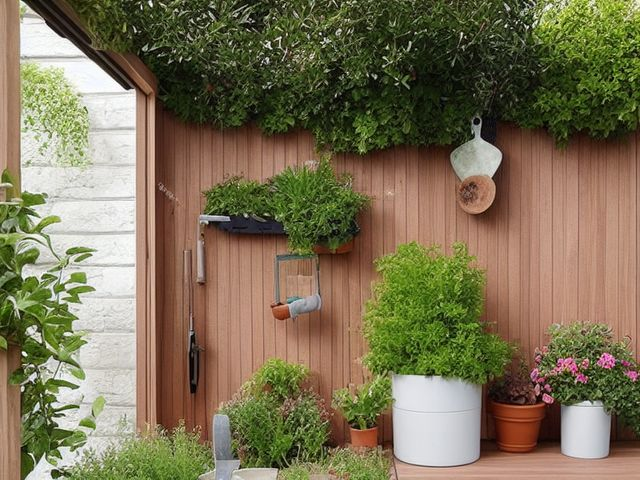

Patio or Deck micro zone
The Garden and Plant Care Zone
Keep the containers alive and keep everything that feeds them off the ground and out of reach.
One session: 45-75 min. most of it in Sort, and the chemical shelf is the slow part

What done looks like
Every saucer empty, pots nested by size along the wall with drain holes clear, one tool caddy holding trowel, pruners, and gloves, and a latched chemical box above the tools with no more in it than you can name from the doorway.
Check these before you start
- Poison, choke, or strangleSlug pellets and fertilizer granules look like food to a dog, and a concentrate decanted into a drink bottle is the classic route to a poisoning in a house with children.
- Fall, cut, or crushA large glazed pot full of wet soil is far heavier than it looks and it lands on feet; slide it on a wheeled saucer instead of lifting it.
What to have on hand before you start
These are types of thing, not brands. If you already own something that does the job, that is the right one to use. Each says which pass needs it and what to watch out for.
- Garden hose
Float loose grit off outdoor furniture, decking, and pots before any cleaner is applied, in the Shine pass.
Drain and disconnect before the first frost. Never run a hose across the walking route between the door and the steps.. - Stiff scrubbing brush
Scrub caked mud and salt out of a boot tray, a bin, or an outdoor surface, in the Shine pass.
Work outdoors where the run-off goes to ground rather than into a household drain. - Push broom
Sweep a slab or hard floor in a single pass to hold a degreased surface, in the Shine and Sustain passes.
Hang head-up on a rail; bristles resting on concrete splay and re-soil the floor they touch. - Reusable or disposable nitrile gloves
Protect hands during cleaning and sorting, in the Shine and Safety passes.
Use per product label. - Small detail brush set
Clean seams, tracks, corners, and hardware, in the Shine pass.
Use surface-safe bristles. - Impact-rated safety glasses
Protect eyes during garage and workshop resets, in the Safety pass.
Use rated protection appropriate to task. - Color-coded microfiber cloth set ×12
Wipe, dust, and dry surfaces, in the Shine pass.
Wash by use color; avoid fabric softener. - Neutral pH multi-surface cleaner
Routine cleaning of sealed surfaces, in the Shine and Sustain passes.
Verify surface compatibility; lock around children and pets. - Compact vacuum with attachments
Remove dust, crumbs, and debris, in the Shine pass.
Use appropriate attachment. - Keep, Relocate, Donate, Recycle, Trash container set ×5
Support rapid item routing during Sort, in the Sort pass.
Do not block exits. - Portable cleaning caddy
Transport and contain cleaning inputs, in the Straighten, Shine and Sustain passes.
Secure chemicals from children and pets. - Portable label maker
Create durable standardized labels, in the Standardize and Sustain passes.
Follow surface and adhesive guidance. - Removable write-on labels
Create temporary or adjustable visual controls, in the Standardize pass.
Test on delicate finishes.
Only if your garden area has one: 7 more
Not every garden area needs these. Each one is here because some do, and the reason is next to it.
- Grill Tool Rack
Create safe homes for outdoor cooking tools, in the Straighten, Standardize and Sustain passes.
Do not overload; anchor wall-mounted or tall systems where required. - Sports Ball Bin
Contain loose balls and gear, in the Straighten, Standardize and Sustain passes.
Do not overload; anchor wall-mounted or tall systems where required. - Deck Box
Protect outdoor cushions and patio items, in the Straighten, Standardize and Sustain passes.
Do not overload; anchor wall-mounted or tall systems where required. - Garden Tool Caddy
Contain small garden tools and supplies, in the Straighten, Standardize and Sustain passes.
Do not overload; anchor wall-mounted or tall systems where required. - Hose Reel
Control garden hose and protect walkways, in the Straighten, Standardize and Sustain passes.
Do not overload; anchor wall-mounted or tall systems where required. - Floor-material-compatible cleaner
Clean sealed hard floors, in the Shine and Sustain passes.
Match cleaner to floor material. - Moisture Absorber or Humidity Monitor
Detect and reduce moisture risk in enclosed storage, in the Safety and Sustain passes.
Install and use according to product instructions.
The six passes, in order
Work them in this order. Sorting after you have arranged things means arranging things you were about to remove.
Sort
Decide what stays. Everything else leaves the zone now.
Turn out every empty pot. A pot with no drainage hole and a pot still holding last year's dead root ball both go; keep the pots you will actually plant this season plus two, nested by size. Bagged potting soil that has gone solid and sour gets emptied into a bed rather than stored for a spring that will not want it.
Straighten
Give what stays a home, placed where the hand actually reaches.
Hand tools stand in one caddy you can carry in the hand that is not holding the watering can. Long tools hang head up on a rail so no blade waits at shin height. Fertilizer and every concentrate sit above the tools, never in the row beside the watering can where a tired hand reaches.
Shine
Clean it, and use the cleaning to inspect what you cannot see when it is full.
Empty every saucer, then scrub the white mineral crust from the pot rims and scrape soil off the trowel and pruner blades before they go back damp. Wipe the pruner blades and put a drop of oil on the pivot while you have them open.
Surface by surface, all 8 of them, with what to use on each.
Safety
Make the zone safe for everybody who uses it, including the shortest person.
The concentrates, slug pellets, and fertilizer are the real hazard on this patio, and pellets look like food to a dog. They stay in a latched box, up high, in the container they came in, never decanted into a drink bottle or a jam jar. Empty standing water from saucers, the wheelbarrow, and the upturned pot lid after rain so mosquitoes have nowhere to breed.
Standardize
Write down the best way you know today, so it survives you forgetting.
Every pot carries a small tag with what is in it and the month it went in, so anyone in the house can decide whether it needs water without coming to find you.
Sustain
Attach the reset to something that already happens, so it keeps itself.
When you fill the watering can, look along the row of saucers before you start pouring.
The half bottles
There is a shelf of part-used concentrates: a weed killer bought for one path, a rooting hormone, a bug spray whose label has washed to nothing. You avoid this shelf because there is no easy way to get rid of them, and pouring them down a drain is not one. Two rules settle it. First, if you cannot read the label, that container is finished, no exceptions, because an unlabelled garden chemical cannot be used safely by you or by anyone who finds it later; it goes to the household hazardous waste collection. Second, if you can read it, ask whether you have used it in the last two growing seasons. If not, it goes the same way. What survives is a short row you can name from the doorway. From this point on, buy the smallest container the shop sells rather than the best value size, because the value size is what created this shelf.
Cleaning it properly, surface by surface
You clean this zone so the containers keep living and nothing that feeds them ends up loose on the ground. Empty every saucer, scrub the mineral crust off the rims, and put the tools back dry.
Work down, not across. Whatever comes off a high surface lands on the one below it, so cleaning the floor first means cleaning it twice.
Carry these in with you. Neutral pH multi-surface cleaner; Color-coded microfiber cloth set; Floor-material-compatible cleaner; Portable cleaning caddy; Stiff-bristled scrub brush; Tool oil; Gloves; Broom.
- The saucers under the pots
Tip out the standing water first, then scrub the white crust and algae from the dish with a brush and the neutral pH cleaner, rinse, and dry before it goes back. - The pot rims and exteriors
Scrub the chalky mineral crust off the rim and down the outside of the pot with a stiff brush and water, working the ring where salts have wept through the clay, then rinse. - The pot bases and drain holes
Tip each pot and check the drain holes are open, poking a clogged one clear with a stick or a spare stake, and rinse the base where roots and grit have matted over the holes. - The wall line and shelf where the pots nest
Wipe the strip of wall and the shelf the pots stand against, where damp soil has printed rings and moss has taken hold in the shade. - The trowel and pruner blades
Scrape the caked soil off the trowel and the pruner blades, wipe them down, and dry them fully. Open the pruners and put a drop of tool oil on the pivot before they go back in the caddy. - The tool caddy and the watering can
Tip the grit out of the bottom of the caddy and wipe it out, and rinse the watering can and its rose so nothing sits stagnant in it. - The outside of the latched chemical box
Wipe the outside of the box and its latch clean. The contents stay sealed in their own containers, so this is a wipe of the box only. - The ground and footprint of the zone
Sweep up the spilled compost and the crust of dried soil, then mop the floor with the floor-material-compatible cleaner so no fertilizer residue is left underfoot.
Inspect as you clean. Cleaning is the only time you see the zone empty, so use it.
- A dark damp ring on the decking under a saucer that never dries out points to a saucer overflowing or a pot draining onto the boards.
- Rust and pitting on a trowel or pruner blade, or a pruner spring that has lost its snap, is a tool on its way out. Note it as you dry it.
- A hairline crack starting at a pot's drain hole, or a glazed pot ringing dull instead of clear, is the pot that will split with the next frost.
- Wrigglers in the standing water of a saucer or the watering can are mosquito larvae, so flag any water that has been sitting long enough to breed.
- A chewed corner, a leak, or a swollen container spotted inside the chemical box when you open it is a spill risk to flag, not to sort out here.
The standard that keeps it fixed
Chemicals latched and labelled above the tools, every saucer empty, every pot tagged with what and when.
Reset trigger. When you fill the watering can, run your eye down the saucers first.
The rest of the patio or deck, in working order
Each of these is one session on its own. Finish this zone before you open the next.
- The Outdoor Seating Zone
- The Grill and Outdoor Cooking Zone
- The Outdoor Dining Zone
- The Garden and Plant Care Zone, you are here
- The Outdoor Storage Zone
- The Surface, Rail, and Safety Zone
The Patio or Deck in full, with what each of the 6 zones is for
Related reading
- What is 6S?
- This zone's safety pass, in full
- Is one spot in this zone always the one you skip?
- Why this zone gets messy again
- Decluttering vs. organizing
- Before you buy storage for this zone
- Still does not fit, even after the honest count?
- Does something in this zone actually get used somewhere else?
- Stuck on one item in this zone?
- Written the standard, but nobody else follows it?
- Does everyone in the house agree what "done" looks like here?
- Does more than one person use this zone?
- Found a duplicate of something in this zone?
- Why the standard above names one home per category
- Is the everyday item in this zone actually the easy one to reach?
- Not sure whether to keep something in this zone?
- Does this zone keep running out of something?
- Started this zone and stalled partway through?
- Have you stopped noticing the clutter in this zone?
When you want it off the screen
Carry The Garden and Plant Care Zone into the room
The method above is complete and free. The Whole House Print Pack puts The Garden and Plant Care Zone and the other 113 micro zones on 684 printable cards, so the steps you just read are not stuck behind a phone screen while your hands are full.
The Print Pack, 19 dollarsJust this zone, 4 dollarsOr draw a card free
The Garden and Plant Care Zone on its own is 4 dollars for 6 cards. All 114 micro zones is 19 dollars for 684. The whole house is the better buy; the single zone is here so you can take only what you are working on.
If The Garden and Plant Care Zone keeps fighting back, the real problem usually sits somewhere else in the room. A one hour virtual consult is 250 dollars: we find the function, the friction and the root cause together, and you keep a written standard for the space. See what a consult covers.